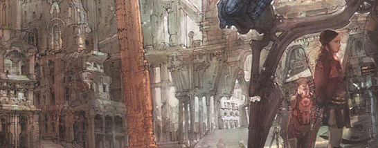
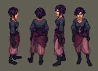
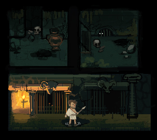
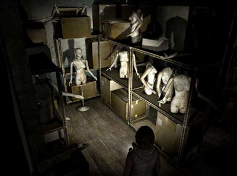
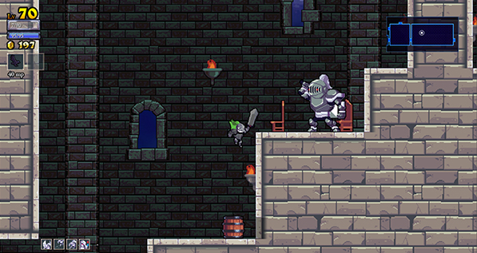
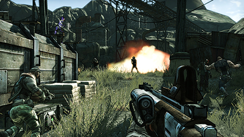

La direction artistique (première partie)
Sur les différents projets de jeu amateur auxquels je participe, je m'occupe des graphismes. À un moment où l'arrivée des jeux indépendants et la vague rétro change la donne en matière de visuels, je voudrais vous parler un peu des problèmes auxquels j'ai été confronté sur ces projets et en particulier à l'un d'entre eux que j'avais terriblement sous-estimé, celui de la direction artistique.

Quand on entend l'expression « direction artistique », on pense tout de suite à un film ou un jeu pro à gros budget. Pour un jeu amateur ou indépendant, ça peut sembler bien prétentieux. En réalité, cet aspect du développement concerne tout aussi bien les jeux pro que les jeux amateurs et il a une importance capitale. C'est un élément à côté duquel je suis moi-même passé pendant un bon moment, alors qu'en y réfléchissant un peu, j'aurais pu m'éviter beaucoup de boulot.
Qu'est-ce que la direction artistique ?
Dans un projet en équipe, plusieurs graphistes et compositeurs peuvent travailler ensemble. Nécessairement, les différents membres de l'équipe n'ont pas la même vision, les mêmes goûts, les mêmes envies et c'est une bonne chose, car cela apporte de la variété et de la richesse au jeu. Mais il peut arriver que certains points de vue soient irréconciliables. Ou pire : après un bon moment passer à travailler chacun dans son coin, on se rend compte que les contributions de chacun ne forment pas un tout cohérent, même si chaque contribution prise individuellement est excellente.
Le directeur artistique du projet est celui qui va coordonner le travail des membres de l'équipe pour que l'ensemble forme un tout cohérent. C'est lui qui va décider à quoi le jeu final doit ressembler et les ambiances, les impressions et les concepts qu'il doit transmettre. Il définit des « guidelines » que les graphistes vont pouvoir suivre de façon à travailler dans le même sens et non chacun dans son coin et il s'occupe d'harmoniser l'ensemble de la production des différents graphistes. Ce rôle a donc à la fois une dimension artistique (imaginer ce à quoi le jeu final va ressembler, trancher entre les propositions qui lui sont faites) et une dimension relationnelle (gérer les conflits entre membres de l'équipe, faire partager à tous les membres la même vision du jeu, répartir les tâches).
Expérience personnelle.
Avant d'aborder le sujet de façon plus théorique, je vais parler un peu de mon expérience personnelle, pour essayer de montrer les problèmes que j'ai pu rencontrer et pourquoi il est important de bien définir ce qu'est la direction artistique du jeu. Je m'occupe des graphismes de deux projets amateurs : Lije, dont vous avez pu voir un aperçu des graphismes dans cet article et Cerberus, dont je n'ai pas encore parlé sur les Forges. Il s'agit de deux projets assez différents, si l'on met de côté le fait que ce sont tous les deux des RPG.
Lije est un projet de RPG centré sur la narration, avec une résolution assez élevée (1280 pixels par 720). Il cherche à aborder des thèmes qu'on ne voit pas souvent dans les RPG classiques (en particulier, la question de la folie). Il s'agit d'un projet avec une équipe assez conséquente, une dizaine de personnes (même si certaines participations sont plus ponctuelles que d'autres) dont plusieurs graphistes. J'ai rejoint le projet en cours de route pour m'occuper des décors, alors qu'un premier prototype avait déjà été réalisé.
Cerberus est un projet de RPG axé action, avec une résolution de Super Nintendo (256 pixels par 224), inspiré de jeux comme Terranigma. L'équipe se limite à trois personnes : Antoine Gersant (administrateur des Forges) qui code, Armand Rochette qui compose et moi-même qui m'occupe de l'ensemble des graphismes. Je suis donc le seul à travailler sur les graphismes. J'ai créé le projet avec Antoine, j'étais donc présent dès le tout début.
Lije
Quand j'ai rejoint l'équipe de Lije, un premier prototype du jeu avec des décors rudimentaires avait déjà été créé. J'ai donc commencé à dessiner des décors pour le jeu. Au début, les graphismes ont avancé assez rapidement : je venais d'arriver, j'étais motivé, j'avais de l'énergie et grâce au prototype, j'avais une vision plutôt claire de là où je devais aller.

Cependant, même si j'avais bien réfléchi aux problématiques de lisibilité, de contraste, d'ambiance, j'avais oublié un certain nombre d'autres choses très importantes. C'est seulement le prototype fini que nous avons réalisé que nous étions lancés trop vite dans les graphismes, sans vraiment réfléchir à ce que ça impliquait. Les décisions que nous avions prises sans y réfléchir impactaient très lourdement la suite du développement et nous avons pris (perdu ?) beaucoup de temps afin de les résoudre. En voici quelques uns :
La résolution : le pixel art se marie mal avec les grandes résolutions, d'une part parce que le pixel art tire sa force visuelle de sa petite taille, d'autre part parce qu'adapter du pixel art à grande échelle nécessite beaucoup trop de travail.
L'homogénéité : nous avions travaillé chacun de notre côté et les différents éléments des graphismes (décors, personnages et menus) ne se mariaient pas bien ensemble, en particulier en raison de l'inhomogénéité des palettes.
La création des maps : ça a été un vrai casse-tête de trouver un processus de travail qui nous permettent de faire des décors raisonnablement beaux en un temps raisonnable, sans compter qu'une partie du travail ne pouvait pas être déléguée aux gens en charge du level design.
Ça a nécessité beaucoup de négociations, de la sueur, du sang et des larmes, mais nous y sommes parvenus. J'ai appris un certain nombre de choses lors de ce processus : j'ai dû simplifier et adapter mes méthodes de travail, j'ai dû apprendre à évaluer le temps que me prenait la production des graphismes et réfléchir à leur réutilisation, j'ai dû apprendre à discuter et travailler avec des gens qui n'avaient pas nécessairement les mêmes opinions et arriver à me mettre d'accord avec eux sans qu'aucun de nous ne se sente aliéné.
Cerberus
Pour Cerberus, que j'ai commencé plus tard, les choses ont été plus simples, pour deux raisons : j'avais l'expérience acquise sur Lije pour m'aider et je travaillais avec un groupe réduit où j'étais le seul graphiste (au début du projet, il n'y avait qu'Antoine et moi-même). Qu'est-ce qui a mieux fonctionné cette fois-ci ?
La première chose, c'est que nous nous sommes d'accord immédiatement sur l'ambiance visuelle du jeu et les choix de design, plutôt que de nous poser la question après avoir bien entamé les graphismes. Comme le manque de directions claires avait posé problème pour Lije, on a tout de site essayé de définir des directions fortes (une ambiance sombre et inquiétante, un design globalement inspiré de l'Antiquité gréco-romaine, l'utilisation récurrente de masques).

Nous avons listé les éléments graphiques à produire et nous avons discuté la résolution et les outils de travail dès le tout début, de façon à être sûrs de pouvoir finir. Nous avons choisi un rendu pixel art, nous avons donc choisi une résolution adaptée (celle de la Super Nintendo) et un outil adéquat pour la création de cartes (Tiled). Dans l'ensemble, c'est le fait d'avoir pris les décisions très en amont et de s'y être tenus qui nous a permis d'avancer efficacement : une fois qu'une décision est prise, on ne revient pas dessus.
Sur ces deux projets, j'ai donc eu des expériences assez différentes en termes de travail et de satisfaction, en raison dont le travail de direction artistique a été mené. Maintenant que je vous ai montré avec ces exemples ce qu'une direction artistique bien pensée peut changer (du moins, je l'espère), intéressons nous aux buts de celle-ci.
Pourquoi ai-je besoin d'une direction artistique bien définie ?
Pour plaire et faire une forte impression au joueur.
C'est le plus immédiat. De bons graphismes sont toujours un plus et ils peuvent apporter énormément à l'univers du jeu. Certes, les graphismes ne font pas tout, mais il ne sont pas inutiles pour autant. L'ambiance d'un Silent Hill par exemple passe aussi bien par son écriture que par le design torturé des lieux que le joueur traverse.

Pour améliorer la jouabilité.
Il y a depuis un moment chez les joueurs et les critiques une mode qui vise à opposer graphismes et gameplay : les grosses boîtes s'intéressent plus aux graphismes qu'au reste et le rendu visuel ne sert au final qu'à masquer la vacuité du gameplay et du scénario. Si c'est une critique qui peut se justifier, elle a tendance à rapidement tomber dans la caricature : le beau c'est mal, autant se complaire dans le moche.
Contrairement à cette idée reçue, le graphisme peut être utile au gameplay : la lisibilité des interfaces et de l'écran est absolument essentielle pour le jeu et le rend plus agréable, plus fluide. Pire, des graphismes peu lisibles peuvent pénaliser le joueur : un jeu de plate-forme où le rendu ne permet pas de distinguer le background des éléments interactifs ou des ennemis risque de provoquer un certain nombre de crises de fureur (Derek Yu l'illustre très bien avec Earthworm Jim, par exemple).

Rogue Legacy est un bon exemple : à la façon d'un Castlevania, les murs, les plates-formes et tous les éléments « en dur » sont clairs, de façon à ressortir, alors que le fond du décor et les éléments « traversables » sont sombres. Les différents sprites sont entourés d'un contour noir d'un ou deux pixels, de façon à ressortir encore plus nettement sur le fond. Avec ces choix visuels simples mais bien pensés, le jeu est extrêmement lisible et ce même en niveaux de gris.
Pour m'éviter du travail inutile.
Il faut se poser la question de la direction artistique le plus tôt possible : plus je prends une décision tard au cours du développement, plus elle me coûte en temps et en travail (on pourrait presque parler de « dette graphique »). Si j'ai dès le début une idée de la direction que je veux suivre, je risque moins de me lancer dans du travail inutile et j'aurai moins besoin de retoucher (voire de refaire complètement) d'anciens graphismes.
Imaginons que je travaille sur un projet de jeu RPG et que je me lance tête baissée dans des graphismes plutôt réalistes. Tout d'un coup, l'équipe se rend compte qu'il n'y a pas eu de réelle discussion sur la charte graphique et réalise que la direction la mieux appropriée au scénario et au gameplay serait quelque chose de très cartoon. Est-ce que je continue mes graphismes dans un style réaliste en renonçant à un style plus approprié ou est-ce que je jette tout mon travail à la poubelle et je recommence dans un style cartoon ? C'est précisément pour éviter ce genre de dilemme (très cruel pour un graphiste, croyez moi) qu'il faut réfléchir à la direction artistique le plus en amont possible du projet.
Pour trancher rapidement et donc ne pas perdre de temps.
Si les grandes direction sont bien définies au début, les différents membres n'ont pas besoin de systématiquement venir faire vérifier leur travail par le directeur artistique, ce qui évite des allers-retours et permet à chacun de passer plus du temps à avancer dans son travail qu'à faire des vérifications. C'est plus efficace, mais aussi plus agréable et plus gratifiant de pouvoir travailler en autonomie. En cas de conflit, c'est aussi un moyen de trancher plus efficacement.
Pour donner une homogénéité et une identité au jeu.

C'est un moyen de donner une identité forte au jeu, ce qui améliore l'expérience du joueur. Définir une direction artistique dès le début, c'est un moyen de coordonner le travail des différents graphistes plus facilement et de limiter le travail d'harmonisation. Qui plus est, quand on est graphiste, il est toujours plus gratifiant de voir son travail intégré tel quel que de le voir lourdement remanié pour l'accorder avec le reste du jeu.
Une identité visuelle forte permet aussi de présenter le jeu et de faire sa promotion beaucoup plus facilement. C'est par exemple grâce à son style cell-shadé avec de forts contours noirs que Gearbox a rendu Borderlands immédiatement reconnaissable au milieu d'une foultitude d'autres FPS. En revanche, il est triste de voir que c'est le résultat d'une repompe scandaleuse…